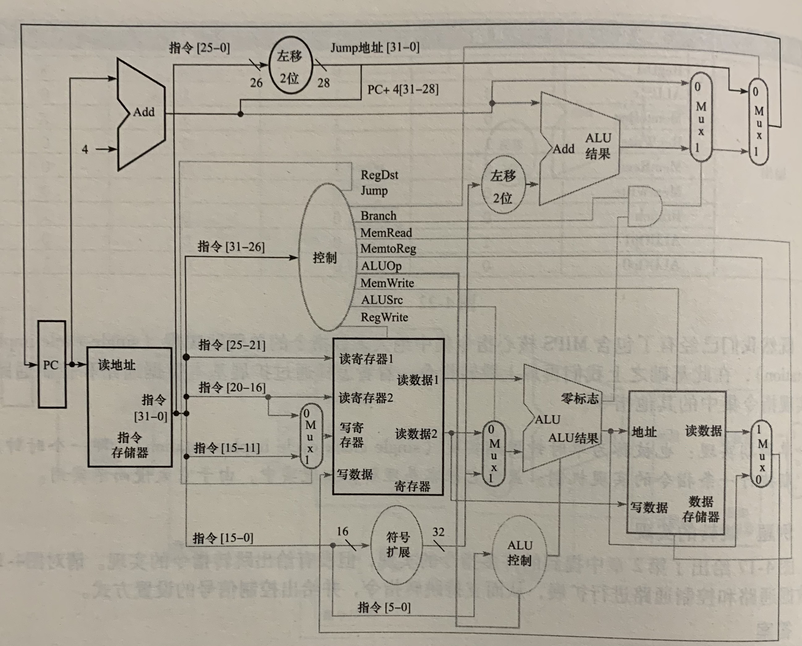
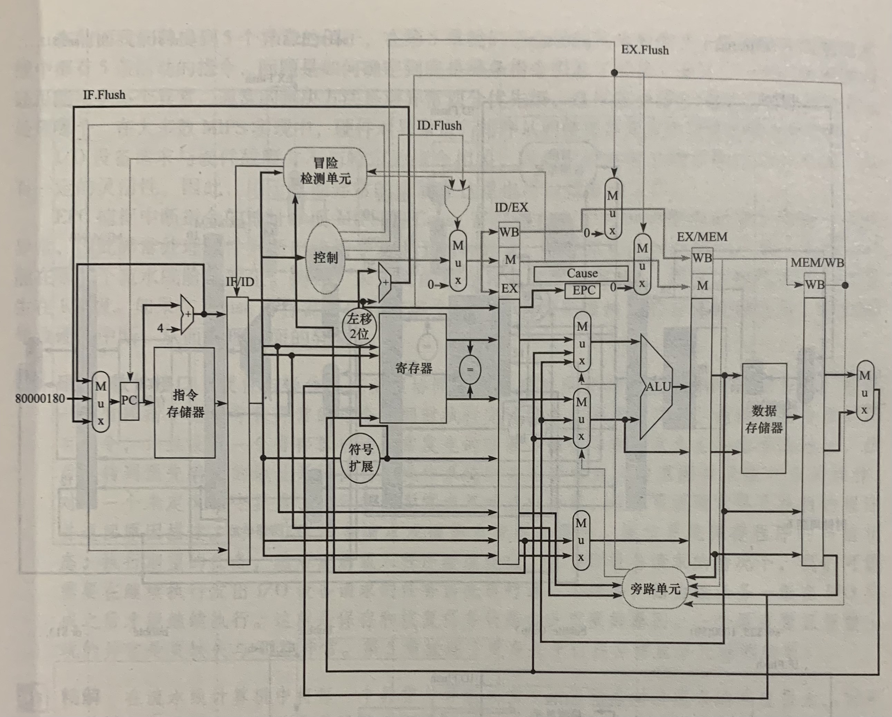

背景
这篇文章以MPIS指令集为基础，通过分析算数计算、数据传送和分支等指令，形成一个逻辑的数据通路。同时尝试构建一条简单的流水线，提升IPC。
逻辑设计
考虑计算机的设计，就必须决定机器的逻辑设计和时钟。机器的数据通路部件中主要包含两种不同的逻辑单元：组合单元和状态单元。前者是计算单元，输出仅取决于当前的输入，如ALU等。后者是存储单元，用于保存状态，如寄存器或存储器。
一般采用沿边沿触发的方式来保证数据通路的时序，即时序逻辑单元中存储的所有值都只允许在时钟跳变的边沿时改变。
一个简单的数据通路
一个典型的数据通路包含以下几个组件：程序计数器、指令存储器、加法器、ALU、寄存器堆、数据存储单元、符号扩展单元。
整个通路可以完成常用的数据传送指令、算数计算指令和分支跳转指令。中心控制单元根据指令类型和操作码解析出相应的控制信号，包括ALU的控制码、寄存器堆的写入信号、存储单元的读写信号及分支指令等。
至此，一个单周期设计的数据通路已经成型。

流水线
为什么引入流水线
如果每条指令都在一个指令周期内完成，那么CPI就是1。这个值非常理想，但这种模式下指令周期取决于耗时最长的指令，这对于其他指令而言显然是不合理的。这会造成数据通路上部分部件的空闲，所以流水线的方案就出现了。
一个简单的流水线
流水线简单的说就是将每个指令切割成若干个操作，每个操作对应着一个时钟周期。这样每个时钟周期内可以执行指令的一部分，有多少个操作理论上就可以同时运行多少条指令。但由于数据通路的各部件同时执行不同的指令，所以需要引入状态单元来记录每个指令的状态，所以需要引入流水线寄存器。
一般讲流水线分为取址、译码、执行、访存和写回五个阶段。阶段之间使用流水线寄存器保存组合逻辑的执行结果。由于数据通路是沿上升沿触发的，所以写回阶段不需要额外的寄存器来保存状态，直接通过控制信号完成操作。
数据传送指令和算数计算指令在流水线中的执行很容易映射，就不再赘述。这里单独分析下分支跳转指令。
| 31:26 | 25:21 | 20:16 | 15: 0 |
|---|---|---|---|
| 4 | rs | rt | Addr |
寄存器堆中读出rs和rt的值，然后ALUSrc取0，ALU比较两个值后设置零标志位。地址加法器会将低16位左移2位后与+4后的PC地址相加，计算出跳转后的地址。左移2位是为了4字节对齐。同时控制信号根据指令码置位Branch，根据ALU的零标志位相与后决定PC更新逻辑。
结合分支跳转指令的执行过程我们可以发现，跳转地址和两个寄存器值的比较同时发生，并且根据比较结果和Branch控制信号一起决定PC的更新。这样一来PC的更新需要到访存阶段才可以决定，这会影响影响流水线后面的指令。后面会针对这个进行优化（待补充链接）。
流水线冒险
流水线的引入大大提升了IPC，虽然会增加一些延迟，但是整体指令的处理速度却得到了极大提升。但流水线中存在一种情况，在下一个时钟周期下一条指令无法执行，这就是流水线冒险。
结构冒险
结构冒险即硬件不支持多条指令在同一个时钟周期执行。也就是说因缺乏硬件支持导致指令不能再预定的时钟周期内执行。
数据冒险
数据冒险即因无法提供指令执行所需数据而导致指令不能在预定的时钟周期内完成。数据冒险一般由编译器和硬件一起来规避，编译器可以通过调整无关指令的执行顺序来避免，硬件设计可以通过旁路来加快数据获取过程。如果旁路也无法解决数据依赖的话，就需要阻塞流水线，也就是插入气泡。
控制冒险
也称为分支冒险，即取到的指令不是所需要的倒置指令不能在预定的时钟周期内完成。
如单周期的数据通路中所示，只有在访存阶段才可以判断是否发生控制冒险。这个代价太大了，所以需要将PC计算部件放置在译码阶段，从而降低因控制冒险带来的速度下降。
对于控制冒险来说，除了阻塞方案外，还可以基于预测来处理。通过正确预测分支的结果来保证流水线的处理速度。当预测错误时，需要丢弃分支后执行的指令。
流水线小结

上图是一个流水线的示意图，和数据通路比，增加了流水线寄存器、控制单元、冒险检测单元和异常处理。接下来分别进行分析。
未完待续。